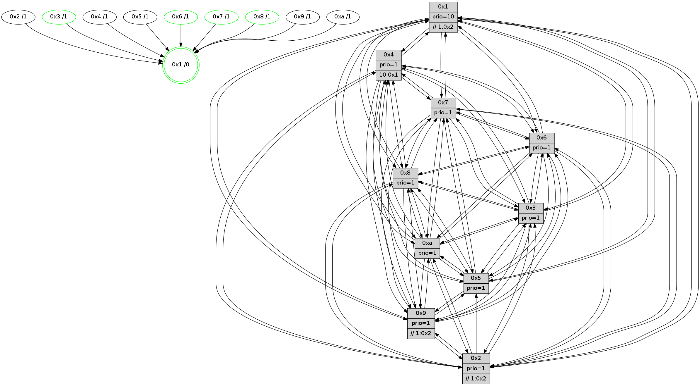

>> << IDX [start] -100 -25 -5 +0 +5 +25 +100 [965.100903034]
 Previous packets
----------------------------------------------------------------------
960.372116 beacon01(faad) #0 coord=01,02,03,04,05,06,07,0a,09,08 cycle=688.0ms assoc
-- color-indic=1 64 2b 97
960.382099 beacon02(faad) #0 coord=01,02,03,04,05,06,07,0a,09,08 cycle=688.0ms assoc 64 b8 a6
960.392100 beacon03(faad) #0 coord=01,02,03,04,05,06,07,0a,09,08 cycle=688.0ms assoc 64 c2 eb
960.402098 beacon04(faad) #0 coord=01,02,03,04,05,06,07,0a,09,08 cycle=688.0ms assoc 64 b5 01
960.412098 beacon05(faad) #0 coord=01,02,03,04,05,06,07,0a,09,08 cycle=688.0ms assoc 64 cf 4c
960.422100 beacon06(faad) #0 coord=01,02,03,04,05,06,07,0a,09,08 cycle=688.0ms assoc 64 41 9b
960.432101 beacon07(faad) #0 coord=01,02,03,04,05,06,07,0a,09,08 cycle=688.0ms assoc 64 3b d6
960.442103 beacon0a(faad) #0 coord=01,02,03,04,05,06,07,0a,09,08 cycle=688.0ms assoc 64 4a dd
960.452105 beacon09(faad) #0 coord=01,02,03,04,05,06,07,0a,09,08 cycle=688.0ms assoc 64 c4 0a
960.462104 beacon08(faad) #0 coord=01,02,03,04,05,06,07,0a,09,08 cycle=688.0ms assoc 64 be 47
960.473822 [Hello(5): seq=614 sym=7,6,4,3,1,9,8,10,2 sysInfo=hasWarning stat=7:11,4,3,9/6:3,5,3,0/4:9,2,0,7/3:1,5,9,10/1:6,0,1,1/9:5,12,14,4/8:7,14,12,9/10:4,0,8,4/2:1,6,1,0]
960.477962 [Hello(1): seq=523 sym=4,2,9,5,10,3,8,6,7 sysInfo=coloring-mode-on,ColoringModeRequestCalled stat=4:2,8,15,1/2:2,3,14,11/9:0,6,14,5/5:12,3,5,4/10:2,8,12,2/3:0,0,13,3/8:2,1,7,1/6:15,2,10,10/7:13,4,13,12]
960.481226 [Hello(3): seq=614 sym=1,7,6,2,4,8,9,10,5 sysInfo= stat=1:3,8,8,0/7:15,7,7,7/6:9,14,11,2/2:8,2,12,9/4:10,1,14,6/8:3,14,7,1/9:6,0,9,10/10:14,4,9,2/5:15,11,4,10]
960.484428 [Hello(2): seq=610 sym=4,5,7,6,3,9,8,10,1 sysInfo=hasWarning stat=4:2,1,5,5/5:12,5,4,0/7:1,5,2,9/6:15,11,10,8/3:15,15,8,5/9:14,7,11,4/8:5,0,7,8/10:4,3,12,9/1:4,13,15,1]
960.487788 [TreeStatus(5)-.->1 #0.128 tree-change,inconsistent-stability child=1]
960.496855 [Hello(6): seq=614 sym=2,3,5,4,7,9,8,10,1 sysInfo= stat=2:1,3,1,0/3:9,11,1,10/5:4,9,13,12/4:8,8,6,1/7:8,4,14,6/9:14,8,14,4/8:5,5,12,2/10:7,15,5,10/1:7,4,13,1]
960.500632 [Color(6) seq=246 @0:0 prio=1]
----------------------------------------------------------------------
961.160249 beacon01(faad) #0 coord=01,02,03,04,05,06,07,0a,09,08 cycle=688.0ms assoc
-- color-indic=1 64 97 92
961.170231 beacon02(faad) #0 coord=01,02,03,04,05,06,07,0a,09,08 cycle=688.0ms assoc 64 04 a3
961.180232 beacon03(faad) #0 coord=01,02,03,04,05,06,07,0a,09,08 cycle=688.0ms assoc 64 7e ee
961.190232 beacon04(faad) #0 coord=01,02,03,04,05,06,07,0a,09,08 cycle=688.0ms assoc 64 09 04
961.200232 beacon05(faad) #0 coord=01,02,03,04,05,06,07,0a,09,08 cycle=688.0ms assoc 64 73 49
961.210233 beacon06(faad) #0 coord=01,02,03,04,05,06,07,0a,09,08 cycle=688.0ms assoc 64 fd 9e
961.220232 beacon07(faad) #0 coord=01,02,03,04,05,06,07,0a,09,08 cycle=688.0ms assoc 64 87 d3
961.230236 beacon0a(faad) #0 coord=01,02,03,04,05,06,07,0a,09,08 cycle=688.0ms assoc 64 f6 d8
961.240238 beacon09(faad) #0 coord=01,02,03,04,05,06,07,0a,09,08 cycle=688.0ms assoc 64 78 0f
961.250237 beacon08(faad) #0 coord=01,02,03,04,05,06,07,0a,09,08 cycle=688.0ms assoc 64 02 42
961.261400 [Hello(9): seq=558 sym=2,5,3,4,7,6,8,10,1 sysInfo=hasWarning stat=2:11,7,13,2/5:13,6,9,3/3:10,10,11,12/4:9,0,9,7/7:12,14,13,9/6:11,5,3,8/8:9,4,14,2/10:2,0,1,0/1:4,7,1,1]
961.264464 [Hello(8): seq=558 sym=5,2,3,4,9,6,7,10,1 sysInfo=hasWarning stat=5:13,4,1,12/2:12,0,13,4/3:15,15,14,12/4:10,12,11,7/9:7,3,1,0/6:0,5,10,10/7:7,5,2,1/10:5,5,5,0/1:1,8,13,0]
961.268082 [Color(1) seq=295 @0:0 prio=10 >>1.@2,1.@3,1.@5]
961.270654 [TreeStatus(2)-.->1 #0.128 tree-change,inconsistent-stability child=1]
961.272864 [Hello(4): seq=614 sym=5,7,6,2,3,9,8,10,1 sysInfo= stat=5:6,5,12,11/7:12,9,15,7/6:2,10,10,9/2:7,5,7,9/3:14,9,10,8/9:11,4,1,7/8:7,2,3,2/10:12,10,4,9/1:1,12,0,1]
961.282016 [Hello(7): seq=614 sym=2,3,5,6,4,8,9,10,1 sysInfo=hasWarning stat=2:9,0,9,12/3:8,12,1,12/5:11,15,4,15/6:7,12,1,6/4:5,0,15,1/8:11,6,2,0/9:7,2,1,0/10:7,9,7,1/1:9,2,14,0]
961.284677 [Hello(10): seq=547 sym=6,2,3,8,7,5,9,4,1 sysInfo=hasWarning stat=6:13,7,15,4/2:2,15,12,4/3:11,2,8,8/8:1,9,4,1/7:8,6,1,1/5:15,0,0,12/9:7,4,1,0/4:2,15,5,7/1:11,5,2,1]
----------------------------------------------------------------------
961.948381 beacon01(faad) #0 coord=01,02,03,04,05,06,07,0a,09,08 cycle=688.0ms assoc
-- color-indic=1 64 53 9c
961.958363 beacon02(faad) #0 coord=01,02,03,04,05,06,07,0a,09,08 cycle=688.0ms assoc 64 c0 ad
961.968363 beacon03(faad) #0 coord=01,02,03,04,05,06,07,0a,09,08 cycle=688.0ms assoc 64 ba e0
961.978365 beacon04(faad) #0 coord=01,02,03,04,05,06,07,0a,09,08 cycle=688.0ms assoc 64 cd 0a
961.988364 beacon05(faad) #0 coord=01,02,03,04,05,06,07,0a,09,08 cycle=688.0ms assoc 64 b7 47
961.998364 beacon06(faad) #0 coord=01,02,03,04,05,06,07,0a,09,08 cycle=688.0ms assoc 64 39 90
962.008365 beacon07(faad) #0 coord=01,02,03,04,05,06,07,0a,09,08 cycle=688.0ms assoc 64 43 dd
962.018370 beacon0a(faad) #0 coord=01,02,03,04,05,06,07,0a,09,08 cycle=688.0ms assoc 64 32 d6
962.028368 beacon09(faad) #0 coord=01,02,03,04,05,06,07,0a,09,08 cycle=688.0ms assoc 64 bc 01
962.038371 beacon08(faad) #0 coord=01,02,03,04,05,06,07,0a,09,08 cycle=688.0ms assoc 64 c6 4c
962.049310 [Hello(1): seq=524 sym=4,2,9,5,10,3,8,6,7 sysInfo=coloring-mode-on,ColoringModeRequestCalled stat=4:3,8,15,1/2:3,3,14,12/9:1,6,14,5/5:12,3,5,5/10:3,8,12,2/3:1,0,13,3/8:2,1,7,1/6:0,3,10,10/7:14,4,13,12]
962.053834 [Hello(2): seq=611 sym=4,5,7,6,3,9,8,10,1 sysInfo=hasWarning stat=4:3,1,5,5/5:12,5,4,1/7:2,5,2,9/6:0,12,10,8/3:15,15,8,5/9:14,7,11,4/8:5,0,7,8/10:5,3,12,9/1:4,13,15,1]
962.056463 [Color(8) seq=248 @0:0 prio=1]
962.058173 [Hello(3): seq=615 sym=1,7,6,2,4,8,9,10,5 sysInfo= stat=1:3,9,8,0/7:0,7,7,7/6:10,15,11,2/2:9,2,12,10/4:11,1,14,6/8:4,14,7,1/9:7,0,9,10/10:15,4,9,2/5:15,11,4,11]
962.064930 [Color(7) seq=198 @0:0 prio=1]
962.066199 [Color(3) seq=244 @0:0 prio=1]
962.069062 [Color(6) seq=247 @0:0 prio=1]
----------------------------------------------------------------------
962.736512 beacon01(faad) #0 coord=01,02,03,04,05,06,07,0a,09,08 cycle=688.0ms assoc
-- color-indic=1 64 ef 99
962.746495 beacon02(faad) #0 coord=01,02,03,04,05,06,07,0a,09,08 cycle=688.0ms assoc 64 7c a8
962.756495 beacon03(faad) #0 coord=01,02,03,04,05,06,07,0a,09,08 cycle=688.0ms assoc 64 06 e5
962.766495 beacon04(faad) #0 coord=01,02,03,04,05,06,07,0a,09,08 cycle=688.0ms assoc 64 71 0f
962.776496 beacon05(faad) #0 coord=01,02,03,04,05,06,07,0a,09,08 cycle=688.0ms assoc 64 0b 42
962.786495 beacon06(faad) #0 coord=01,02,03,04,05,06,07,0a,09,08 cycle=688.0ms assoc 64 85 95
962.796495 beacon07(faad) #0 coord=01,02,03,04,05,06,07,0a,09,08 cycle=688.0ms assoc 64 ff d8
962.806499 beacon0a(faad) #0 coord=01,02,03,04,05,06,07,0a,09,08 cycle=688.0ms assoc 64 8e d3
962.816499 beacon09(faad) #0 coord=01,02,03,04,05,06,07,0a,09,08 cycle=688.0ms assoc 64 00 04
962.826499 beacon08(faad) #0 coord=01,02,03,04,05,06,07,0a,09,08 cycle=688.0ms assoc 64 7a 49
962.838036 [Hello(7): seq=615 sym=2,3,5,6,4,8,9,10,1 sysInfo=hasWarning stat=2:9,0,9,12/3:8,13,1,12/5:11,15,4,15/6:7,13,1,6/4:5,0,15,1/8:11,6,2,0/9:7,2,1,0/10:8,9,7,1/1:10,2,14,0]
962.841324 [Hello(10): seq=548 sym=6,2,3,8,7,5,9,4,1 sysInfo=hasWarning stat=6:14,8,15,4/2:3,15,12,4/3:12,3,8,8/8:1,10,4,1/7:8,7,1,1/5:15,0,0,12/9:7,4,1,0/4:2,15,5,7/1:12,5,2,1]
962.844496 [STC(1) #0.129 tree-change,inconsistent-stability,stable,to-color d=0]
962.855039 [Color(1) seq=296 @0:0 prio=10 >>1.@2,1.@3,1.@5]
----------------------------------------------------------------------
963.524642 beacon01(faad) #0 coord=01,02,03,04,05,06,07,0a,09,08 cycle=688.0ms assoc
-- color-indic=1 64 3b ac
963.534624 beacon02(faad) #0 coord=01,02,03,04,05,06,07,0a,09,08 cycle=688.0ms assoc 64 a8 9d
963.544624 beacon03(faad) #0 coord=01,02,03,04,05,06,07,0a,09,08 cycle=688.0ms assoc 64 d2 d0
963.554625 beacon04(faad) #0 coord=01,02,03,04,05,06,07,0a,09,08 cycle=688.0ms assoc 64 a5 3a
963.564625 beacon05(faad) #0 coord=01,02,03,04,05,06,07,0a,09,08 cycle=688.0ms assoc 64 df 77
963.574624 beacon06(faad) #0 coord=01,02,03,04,05,06,07,0a,09,08 cycle=688.0ms assoc 64 51 a0
963.584625 beacon07(faad) #0 coord=01,02,03,04,05,06,07,0a,09,08 cycle=688.0ms assoc 64 2b ed
963.594629 beacon0a(faad) #0 coord=01,02,03,04,05,06,07,0a,09,08 cycle=688.0ms assoc 64 5a e6
963.604630 beacon09(faad) #0 coord=01,02,03,04,05,06,07,0a,09,08 cycle=688.0ms assoc 64 d4 31
963.614631 beacon08(faad) #0 coord=01,02,03,04,05,06,07,0a,09,08 cycle=688.0ms assoc 64 ae 7c
963.625877 [Hello(1): seq=525 sym=4,2,9,5,10,3,8,6,7 sysInfo=coloring-mode-on,ColoringModeRequestCalled stat=4:3,8,15,1/2:4,3,14,12/9:1,6,14,5/5:12,3,5,5/10:3,8,12,2/3:2,1,13,3/8:2,2,7,1/6:1,4,10,10/7:15,5,13,12]
963.628700 [Hello(5): seq=616 sym=7,6,4,3,1,9,8,10 sysInfo=hasWarning stat=7:12,5,3,9/6:4,7,3,0/4:10,2,0,7/3:1,6,9,10/1:6,2,2,1/9:7,12,14,4/8:8,14,12,9/10:6,0,8,4]
963.631291 [Hello(3): seq=616 sym=1,7,6,2,4,8,9,10,5 sysInfo= stat=1:4,10,9,0/7:1,7,7,7/6:10,0,11,2/2:9,2,12,10/4:11,1,14,6/8:5,14,7,1/9:7,0,9,10/10:0,4,9,2/5:15,11,4,11]
963.635735 [STC(10)->1 #0.129 tree-change,inconsistent-stability,to-color d=1]
963.636997 [Hello(2): seq=612 sym=4,5,7,6,3,9,8,10,1 mpr= sysInfo=hasWarning stat=4:3,1,5,5/5:12,5,4,1/7:3,6,2,9/6:1,13,10,8/3:0,0,8,5/9:15,7,11,4/8:5,1,7,8/10:6,3,12,9/1:4,14,0,1]
963.640742 [STC(5)->1 #0.129 tree-change,inconsistent-stability,to-color d=1]
963.643383 [Hello(6): seq=616 sym=2,3,5,4,7,9,8,10,1 sysInfo= stat=2:1,3,1,1/3:9,11,1,10/5:5,9,13,12/4:9,8,6,1/7:10,4,14,6/9:15,8,14,4/8:7,5,12,2/10:9,15,5,10/1:8,6,14,1]
963.645851 [Color(8) seq=249 @0:0 prio=1]
963.647470 [STC(6)->1 #0.129 tree-change,inconsistent-stability,stable,to-color d=1]
963.649231 [STC(7)->1 #0.129 tree-change,inconsistent-stability,stable,to-color d=1]
963.651008 [Color(6) seq=248 @0:0 prio=1]
963.652966 [STC(4)->1 #0.129 tree-change,inconsistent-stability,to-color d=1]
963.654198 [Color(3) seq=245 @0:0 prio=1]
963.661329 [STC(2)->1 #0.129 tree-change,inconsistent-stability,to-color d=1]
963.662673 [Color(7) seq=199 @0:0 prio=1]
----------------------------------------------------------------------
964.312772 beacon01(faad) #0 coord=01,02,03,04,05,06,07,0a,09,08 cycle=688.0ms assoc
-- color-indic=1 64 87 a9
964.322754 beacon02(faad) #0 coord=01,02,03,04,05,06,07,0a,09,08 cycle=688.0ms assoc 64 14 98
964.332754 beacon03(faad) #0 coord=01,02,03,04,05,06,07,0a,09,08 cycle=688.0ms assoc 64 6e d5
964.342755 beacon04(faad) #0 coord=01,02,03,04,05,06,07,0a,09,08 cycle=688.0ms assoc 64 19 3f
964.352754 beacon05(faad) #0 coord=01,02,03,04,05,06,07,0a,09,08 cycle=688.0ms assoc 64 63 72
964.362755 beacon06(faad) #0 coord=01,02,03,04,05,06,07,0a,09,08 cycle=688.0ms assoc 64 ed a5
964.372756 beacon07(faad) #0 coord=01,02,03,04,05,06,07,0a,09,08 cycle=688.0ms assoc 64 97 e8
964.382759 beacon0a(faad) #0 coord=01,02,03,04,05,06,07,0a,09,08 cycle=688.0ms assoc 64 e6 e3
964.402761 beacon08(faad) #0 coord=01,02,03,04,05,06,07,0a,09,08 cycle=688.0ms assoc 64 12 79
964.416913 [Hello(10): seq=549 sym=6,2,3,8,7,5,9,4,1 sysInfo=hasWarning stat=6:15,9,0,4/2:4,15,13,4/3:12,4,8,8/8:2,11,4,1/7:8,8,2,1/5:15,0,1,12/9:7,4,1,0/4:2,15,6,7/1:12,6,3,1]
964.420128 [Hello(4): seq=616 sym=5,7,6,2,3,9,8,10,1 sysInfo= stat=5:7,5,12,11/7:13,11,15,7/6:2,11,10,9/2:8,5,8,9/3:15,11,10,8/9:12,4,1,7/8:7,3,3,2/10:14,10,4,9/1:2,13,1,1]
964.425989 [Color(1) seq=297 @0:0 prio=10 >>1.@2,1.@3,1.@5]
964.430189 [Hello(7): seq=616 sym=2,3,5,6,4,8,9,10,1 sysInfo=hasWarning stat=2:9,0,9,12/3:8,13,1,12/5:11,15,4,15/6:7,13,1,6/4:5,0,15,1/8:12,6,2,0/9:7,2,1,0/10:9,9,7,1/1:11,3,15,0]